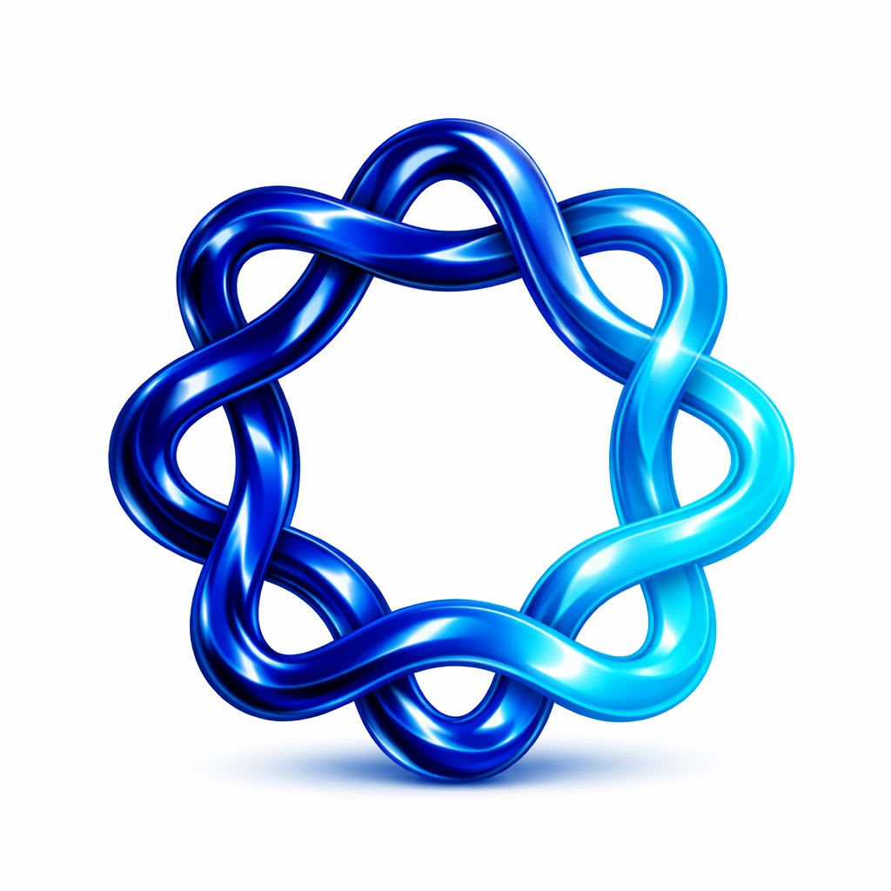
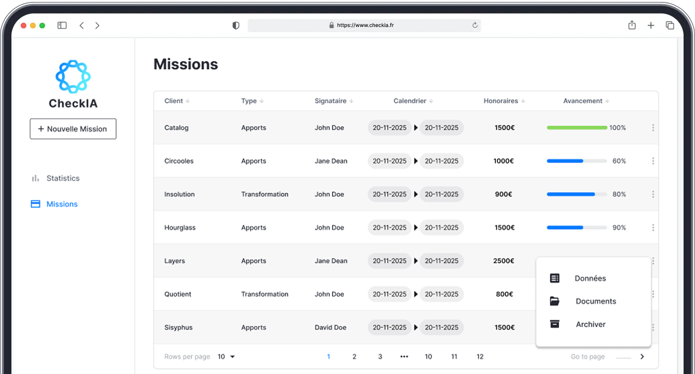

Une charge excessive de formalisation
La production documentaire représente la majorité du temps d’une mission. Rédaction, reformulation et adaptation mobilisent un temps significatif au détriment de l’analyse et de la supervision.
La formalisation représente plus de la moitié du temps d’une mission.
CheckIA la structure, l’homogénéise et l’automatise
dans un cadre conforme aux exigences professionnelles.


Cette production documentaire est :
Répétitive · Manuelle · Chronophage
La production documentaire représente la majorité du temps d’une mission. Rédaction, reformulation et adaptation mobilisent un temps significatif au détriment de l’analyse et de la supervision.
Plus un processus est manuel, plus il expose à des variations et oublis. Ces écarts fragilisent la revue interne et les contrôles qualité.
Les pièces justificatives sont souvent réparties entre différents supports et outils. Leur recherche et leur consolidation deviennent chronophages et sources de fragilité organisationnelle.
CheckIA structure et automatise la production documentaire dans un cadre conforme aux exigences professionnelles. Il réduit significativement le temps consacré à la formalisation, tout en renforçant la cohérence et la traçabilité du dossier, sans intervenir sur le jugement du commissaire aux comptes qui reste maître de la mission.
Extraction des informations pertinentes à partir des pièces de mission. Organisation selon des trames homogènes et cohérentes entre dossiers.
Production de plans de mission, lettres et notes, selon une structure uniforme, conforme aux exigences professionnelles et personnalisée aux standards du cabinet. Réduction des variations formelles.
Regroupement des pièces justificatives dans un environnement sécurisé et cloisonné. Facilitation de la revue interne et des contrôles qualité.
L’automatisation réduit les incohérences structurelles. Le commissaire aux comptes conserve la validation finale et la responsabilité.

Familles de missions couvertes :
Apports et Transformation
Alignés sur les NEP. Workflows structurés selon les exigences professionnelles.
CheckIA s’intègre dans l’organisation du cabinet.
Il ne modifie ni le rôle ni la responsabilité du commissaire aux comptes.
Conçu par des commissaires aux comptes
Développé en collaboration avec des experts en intelligence artificielle français
Workflows structurés selon les exigences des NEP
Production documentaire homogène, traçable et adaptée aux standards du cabinet.
Cloisonnement strict des données par cabinet
Hébergement en infrastructure souveraine
CheckIA structure et automatise la formalisation des missions de commissariat aux comptes. Chaque fonctionnalité s’intègre naturellement dans le workflow du cabinet.


Présentation structurée de la solution et de son intégration dans l’organisation de votre cabinet.
